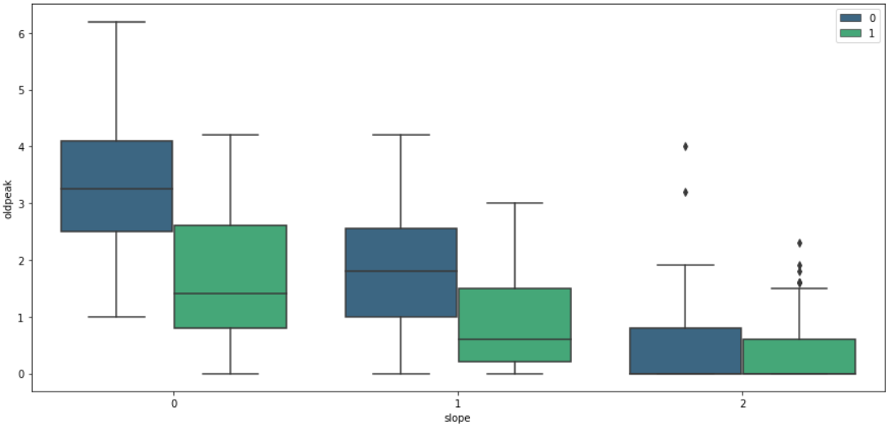
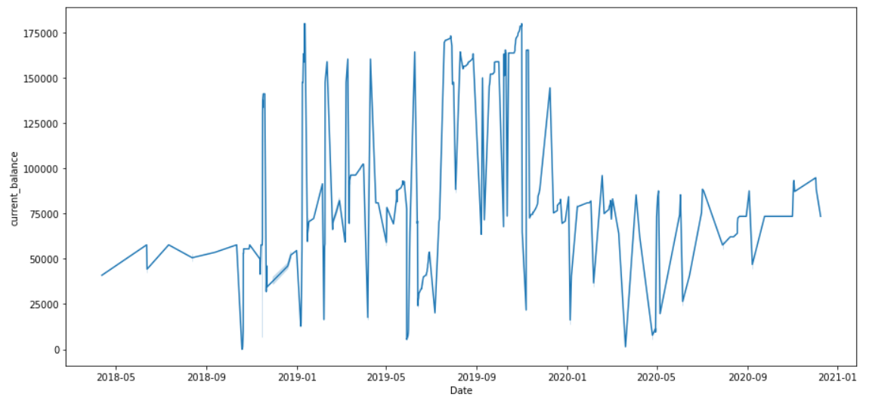

Welcome to my portfolio of multiple projects: I have worked on real data across different industries.
You will find ways I perform EDA's, process data, clean , visualize, and
utilize different strata of softwares and prepare them for Machine Learning.


Python -Jupyter NoteBook was used to accomplish this task. The Telco customer churn data contains information about a fictional telco company that provided home phone and Internet services to 7043 customers in California in Q3. It indicates which customers have left, stayed, or signed up for their service. Multiple important demographics are included for each customer.
The Objective of this project is to Predict user behavior to retain customers.
I extracted data and fixed data errors seen using the appropriate solution in order not to skew the entire data. I performed exploratory analysis (EDA) using python to understand reason and cause of churn rate. Used visualizations to understand the correlations amongst the variables against the target (Churn). I was able to conclude this task by giving my observation, areas that needed further probing in order to reduce churn.
Furthermore, I used different models for better accuracy in predicting user churn behavior. In this project, Logistic regression and XGB gave better accuracy of 80%.

The objective of this task is to explore the dataset and develop actionable insights that will stimulate the revenue of Fitness business,and
also, build multiple customer profiles to understand their characteristics for different products. Finally, I created recommendations that will enable the company attract new customers

I used Excel in developing this project. The objectives of this task by an organisation that offers products using loans are: 1) To discover the time when most of their customers called
the customer service center to resolve issue or the other. 2) To find how many customers the company spoke to on a daily basis and the frequent number of times
in days of the week customers called sales, support or success representative teams of the company and narrow it down to what they discussed .3) To use SQL in
determining the number of loans per customer, and how many of them have over a certain amount in payments. I pulled dataset from excel, cleaned and performed time
coversions before loading it on to Power BI to track these calls, and calls out by customer care agents. 4), I was able to deduce calls were at their peak during noon
and died off after 6pm in the day. Fianlly, I used Excel to develop the days and number of times each customer called from Sunday to Saturday.

The main objective of this task are : 1) To find important details of sales revenue from 2019 to 2020. 2) To discover what the company should be making averagely. 3) To find what stimulated spike in revenue in a particular month. 4) To determine what caused dip in sales and recommendations . I used power BI to generate this overview

Python was used in this task. The essence of this data is to use the best technique such as Support Vector Machine (SVM), Gradient Boosting, Logistic regression, KNN, Random Forest Classifier to discover if an individual will be diabetic or not.

The dataset contains medical information of patients. The intent of this task is to predict the likelihood
of heart attack occuring based on these variables presented.
A number of steps were taken in achieving this task. Firstly,
Exploratory analysis was developed to gain insight into the data and stating out clearly my observations on patients. Secondly, target data was classsified in order to train new data point
point data which category it belongs. Finally used different algorithm's to determine whcih suited best for prediction. In this case, SVM
worked best giving us 81% accuracy rate

Overview of BitCoin wallet transactions over time.